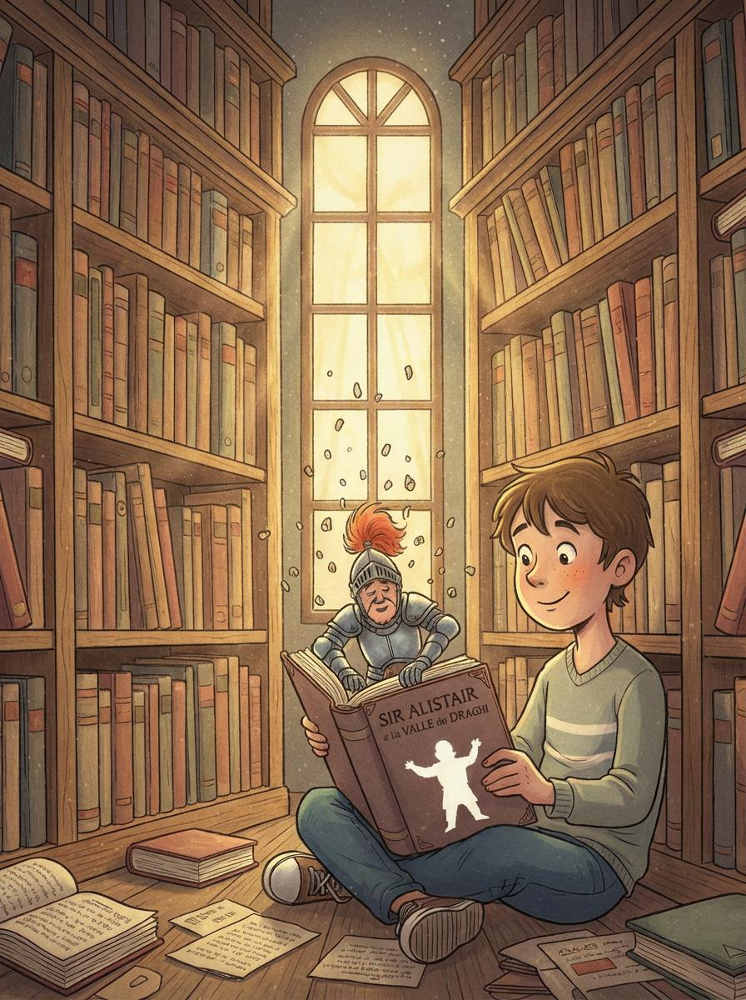
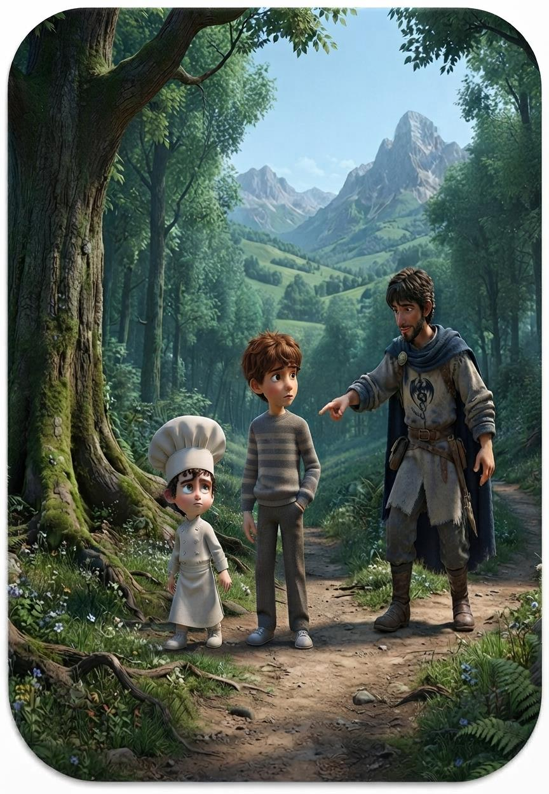
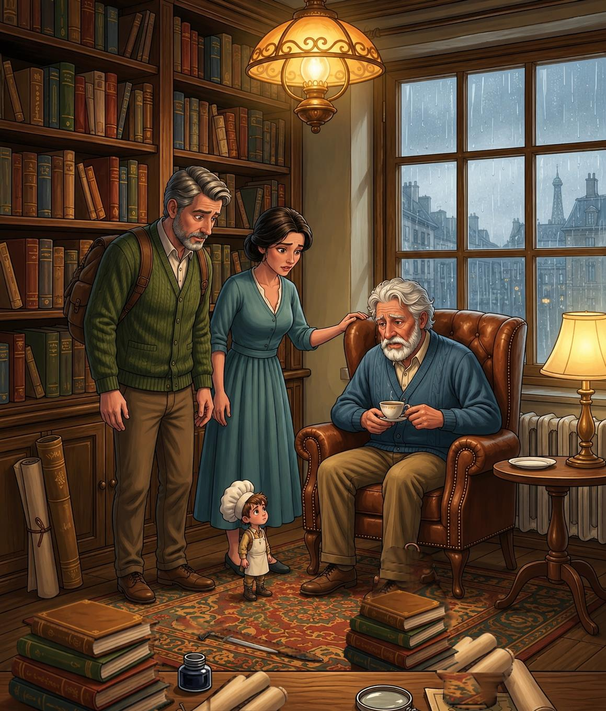

L'infanzia
Il primo incontro, la fantasia e il coraggio di cercare la propria strada.
Leo incontra Sir Alistair da bambino. Cresce, cambia, diventa adulto e poi anziano. Ma alcune storie non smettono di accompagnarci: restano con noi, anche quando il tempo sembra portare via tutto il resto.
Un viaggio tra avventura, amicizia, cambiamento e memoria. Dall'inizio alla fine, tre libri legati da un unico filo narrativo.



La trilogia segue Leo in un percorso che attraversa il tempo. Nel primo libro è un bambino pronto a lasciarsi sorprendere; nel secondo è un adolescente che deve ritrovare il legame con le storie; nel terzo è un uomo anziano, per il quale i ricordi diventano un ponte tra passato e presente.
Sir Alistair attraversa questo percorso con il suo carattere inconfondibile: ironico, imprevedibile e molto meno disposto di quanto sembri a seguire le regole di una storia già scritta.
Il primo incontro, la fantasia e il coraggio di cercare la propria strada.
Le storie cambiano, la memoria viene messa alla prova e qualcosa va ritrovato.
Il tempo, i legami e ciò che continua a vivere nei ricordi di chi resta.
Le storie sono pensate per essere lette in sequenza: ogni volume aggiunge un nuovo capitolo al viaggio di Leo e di Sir Alistair.

Un cavaliere stanco di combattere sogna una vita diversa: vorrebbe diventare pasticciere. Quando Leo lo incontra, ha inizio un'avventura tra mondi letterari, incontri sorprendenti e situazioni imprevedibili.

Sono passati cinque anni. Leo è cresciuto e ha lasciato indietro le storie che amava. Ma un libro, un vecchio biscotto e una vicenda che sembra cancellarsi lo riportano dentro un'avventura in cui nulla è come appare.

Leo è ormai anziano e alcuni ricordi diventano difficili da raggiungere. Marta e Andrea cercano un modo per riavvicinarlo alle storie che hanno accompagnato la sua vita. Anche questa volta, Alistair non resterà a guardare.
Vuoi seguire l'intero viaggio di Leo? Scopri la trilogia completa su Amazon.
Acquista la trilogia completaOgni volume ha una pagina dedicata per entrare nella sua storia, conoscere i personaggi e scoprire cosa lo rende speciale.
Dall’infanzia alla vecchiaia, il viaggio di Leo attraversa il tempo e mostra quanto le storie possano restare con noi.
La trilogia di Alistair non racconta soltanto tre avventure. Racconta il passare del tempo, il modo in cui cambiamo e il posto che le storie possono continuare ad avere nella nostra vita. È un percorso in cui l'amicizia, la fantasia e la memoria si intrecciano, fino a lasciare un segno in chi legge e in chi resta.

La trilogia di Alistair nasce da racconti che Francesco Zonno aveva scritto da ragazzo e che sua madre aveva conservato nel tempo. Ritrovati e riletti molti anni dopo, quei primi manoscritti sono diventati tre libri: una storia cresciuta insieme al suo autore e trasformata in un viaggio che attraversa l'intera vita di Leo.